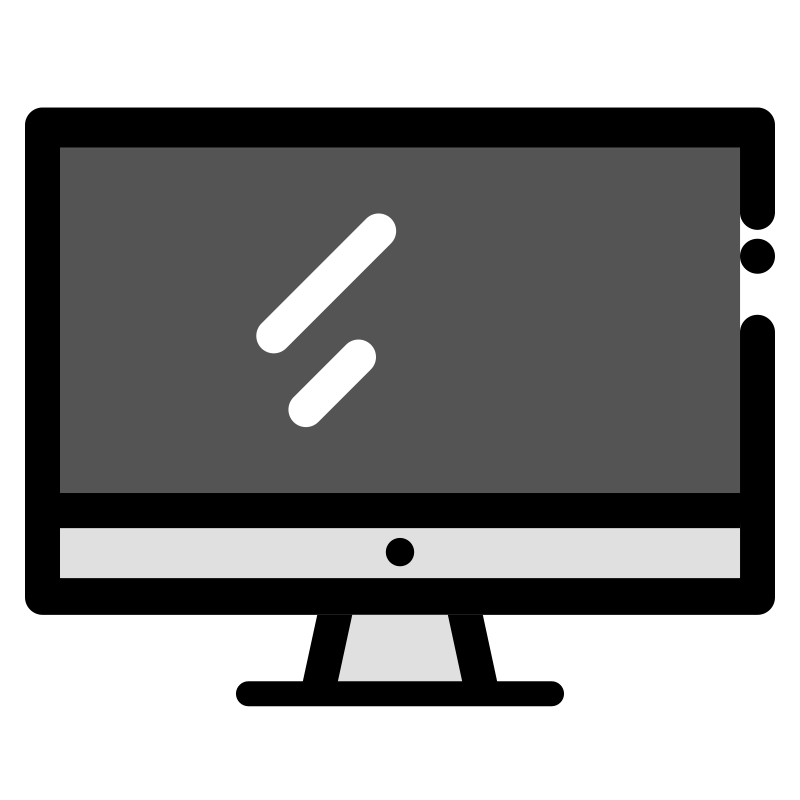

EDOARDO FORNASIER
I'm a Cybersecurity Analyst who has been passionate about technology since childhood, with a strong interest in programming and cybersecurity.
I enjoy understanding how systems behave, especially under pressure or during attacks and I believe that
working in security requires both defending systems and understanding how vulnerabilities work.
This site is my personal space where I keep notes, share experiences, and explore topics related to cybersecurity.
ABOUT
My journey in cybersecurity combines formal education with hands-on experience in real-world security operations. Working with SIEM platforms, EDR solutions, and incident response has taught me that effective security requires both technical knowledge and analytical thinking.
In my free time, I experiment with cybersecurity tools and develop custom software and small malware to understand attack methodologies from an attacker's perspective. This helps me better defend systems by knowing exactly how they can be compromised.
I believe continuous learning is essential in cybersecurity, so I'm always exploring new techniques, tools, and approaches to stay ahead of emerging threats and improve my defensive capabilities.
SKILLS
Security
Cybersecurity & Monitoring
- Wazuh SIEM Management
- WithSecure EDR Monitoring
- Sophos EDR Analysis
- Microsoft Defender
- Nessus & OpenVAS
- AnyRun and VirusTotal Analysis
Offensive
Penetration Testing
- Nessus & OpenVAS
- Burp Suite
- Metasploit Framework
- Hydra & Wireshark

Systems
OS & Virtualization
- Linux (Bash/Shell)
- Windows Security
- AWS (EC2, S3, CloudWatch)
- Docker & Proxmox
Development
Programming Languages
- Python, C#, C++, Go
- JavaScript, HTML, CSS
- PowerShell, Bash
- SQL, Git, GitHub
- Arduino, ESP32
EXPERIENCE
Cybersecurity Analyst
BlueIT SpA - Monza, Italy
• Wazuh SIEM maintenance, fine-tuning and management
• Log monitoring and analysis via Wazuh SIEM
• Incident response and monitoring with WithSecure EDR
• Server and endpoint onboarding on EDR with on-site system administrators
• Sophos EDR event monitoring and client alerting
Cybersecurity Specialist
Eventi Telematici srl - Sesto San Giovanni, Italy
• AWS management (EC2, S3, CloudWatch)
• C# development for AWS automation tools
• Java extension development for Keycloak
• On-premise Wazuh installation and monitoring
• Proxmox VM creation and management
• Docker service management
Cyber Defence Diploma
ITS Angelo Rizzoli
Cyber Defence Technician specializing in security operations and incident response.
Trained in SIEM management, threat analysis, and defensive cybersecurity techniques
with hands-on experience in modern security tools and methodologies.